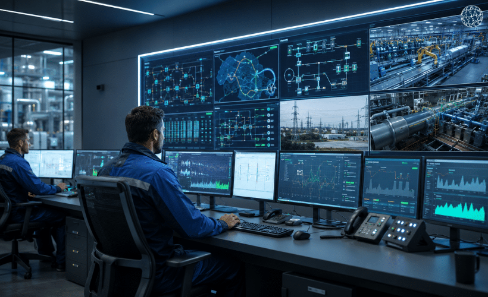
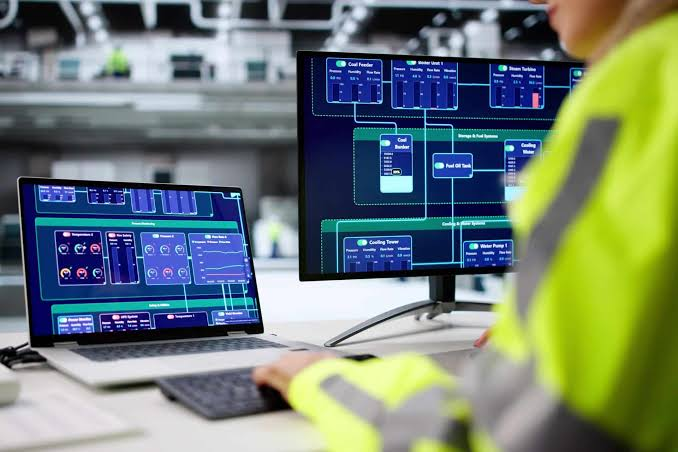

01
Monitoramento
Apresenta valores do processo, como temperatura, pressão, nível de tanques e estado dos motores.
Os sistemas supervisórios, conhecidos como SCADA (Supervisory Control and Data Acquisition), permitem monitorar e supervisionar processos industriais por meio de telas gráficas.
Exemplos são o Elipse E3 e o Siemens WinCC. Eles recebem dados dos equipamentos e ajudam o operador a acompanhar a produção e identificar situações anormais.

O supervisório transforma informações dos equipamentos em dados visuais que podem ser acompanhados pela equipe de operação.
Apresenta valores do processo, como temperatura, pressão, nível de tanques e estado dos motores.
Permite que o operador envie comandos, como ligar uma bomba, quando o sistema e as permissões permitem.
Informa situações fora dos limites e registra falhas, alarmes e paradas para investigação.
Exibe gráficos históricos para comparar valores ao longo do tempo e ajudar na análise do processo.

O supervisório comunica-se com equipamentos de controle, como CLPs, por meio de redes industriais e drivers. Os dados recebidos são mostrados em telas, indicadores e gráficos.
Também pode guardar históricos em bases de dados, como SQL. Como conecta a operação industrial aos sistemas de informação, é importante proteger acessos, computadores e redes contra falhas e ciberataques.
O supervisório oferece uma visão geral da instalação facilita a tomada de decisões e ajuda a equipe a responder rapidamente a mudanças e falhas.